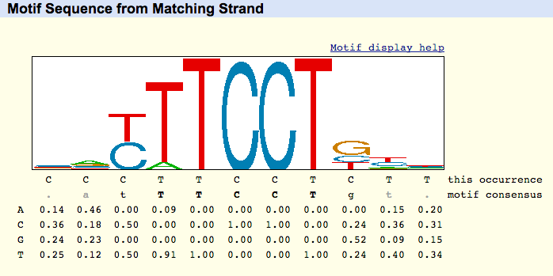

A motif is a predominant regulatory sequence theme associated with a specific transcription factor. This collection of common sites can be represented by a consensus sequence, where a lower-case base, for example, signifies a lower degree of frequency compared to an upper-case base. A more accurate display is a position weight matrix (PWM), which gives the probability of each base numerically. A motif can also be displayed graphically as a sequence logo, where the height of each letter is proportional to its frequency at that particular position, but the total height represents the mutual information content. All three methods convey the same underlying information, numerically displayed in the PWM.
Example ETS1 info from hg19 at chr10:69644211-69644221
This Occurrence line: This line represents the assembly's sequence, from the strand the motif matched. This sequence is the only line referring to the underlying assembly. The sequence logo, motif consensus, and numerical table are instead all generated from the underlying PWM.
Motif Consensus line: The motif consensus line uses the following scheme to indicate strength of the highest-probability base for each column in the motif:
| Weight | Display Convention | Example |
|---|---|---|
| .90 - 1.0 | upper-case bold | ACGT |
| .75 - .89 | upper-case normal | ACGT |
| .50 - .74 | lower-case normal | acgt |
| .40 - .49 | lower-case grayed | acgt |
| .00 - .39 | lower-case grayed | . |
Position Weight Matrix (PWM): Each row of the PWM represents a base, and each column represents the relative frequency of the base occurring for that position.
Sequence Logo: A sequence logo is a stack of letters at each position, where the relative sizes of the letters to each other represents their frequency in the sequence. The total height of the stack of letters reflects the mutual information content at the position, in bits.
Schneider TD, Stephens RM. Sequence logos: a new way to display consensus sequences. Nucleic Acids Res. 1990 Oct 25;18(20):6097-100. PMID: 2172928; PMC: PMC332411
Stormo GD. DNA binding sites: representation and discovery. Bioinformatics. 2000 Jan;16(1):16-23. PMID: 10812473